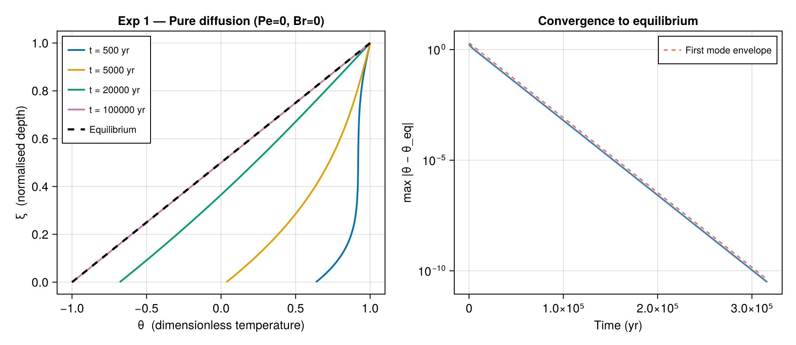

Exp 1 — Pure diffusion
Parameters: Pe = 0, Br = 0, γ = 2, β′ = 0, Λ = 0
Physical interpretation
With no vertical flow (Pe = 0), no strain heating (Br = 0), and no horizontal advection (Λ = 0), the heat equation reduces to the classical 1-D diffusion equation. The Dirichlet surface BC (β′ = 0) pins the surface temperature at $T_\text{air}$. The equilibrium profile is exactly linear:
\[\vartheta(\xi) = 1 + \gamma(\xi - 1) = 2\xi - 1 ,\]
with $\vartheta(1) = 1$ at the surface and $\vartheta(0) = -1$ at the base (the large $\gamma = 2$ value is chosen for mathematical testing — in nature $|\gamma| \ll 1$).
Transient perturbations decay as $e^{-k_n^2\,\tau}$ with $k_n = (n-\tfrac{1}{2})\pi$, so the slowest mode has a decay timescale of $1/k_1^2 = 4/\pi^2 \approx 0.405$ dimensionless units $\approx$ 12 800 yr.
Example
using IceColumnSolutions, CairoMakie
par = benchmark(:exp1)
# --- stationary solution ---
sol_eq = solve_stationary(par; nz=100)
# --- transient from uniform initial temperature ---
T0 = 230.0 # K (slightly below T_air = 250 K)
ts = [500.0, 5_000.0, 20_000.0, 100_000.0] # yr
sol = solve(par, ts; init=uniform(T0), n_modes=12, nz=100)
# ------------------------------------------------------------------
fig = Figure(size=(920, 400))
# ---- left: θ profiles ----
ax1 = Axis(fig[1,1],
xlabel = "θ (dimensionless temperature)",
ylabel = "ξ (normalised depth)",
title = "Exp 1 — Pure diffusion (Pe=0, Br=0)",
yticks = 0:0.2:1)
colors = Makie.wong_colors()
for (j, t) in enumerate(ts)
label = "t = $(Int(t)) yr"
lines!(ax1, sol.theta[:, j], sol.zeta;
color=colors[j], linewidth=2, label=label)
end
lines!(ax1, sol_eq.theta_eq, sol_eq.zeta;
color=:black, linestyle=:dash, linewidth=2.5, label="Equilibrium")
axislegend(ax1; position=:lt, labelsize=11)
# ---- right: max deviation vs time (log-linear) ----
ax2 = Axis(fig[1,2],
xlabel = "Time (yr)",
ylabel = "max |θ − θ_eq|",
title = "Convergence to equilibrium",
yscale = log10)
ts_dense = exp10.(range(2, 5.5, length=60))
sol_d = solve(par, ts_dense; init=uniform(T0), n_modes=12, nz=100)
dev = [maximum(abs.(sol_d.theta[:, j] .- sol_d.theta_eq)) for j in eachindex(ts_dense)]
lines!(ax2, ts_dense, dev; color=:steelblue, linewidth=2)
# overlay the analytic first-mode envelope
k1 = π / 2
kappa_yr = par.kappa * 365.25 * 24 * 3600
tau_dense = kappa_yr .* ts_dense ./ par.L^2
lines!(ax2, ts_dense, 2 .* exp.(-k1^2 .* tau_dense);
color=:tomato, linestyle=:dash, linewidth=1.5, label="First mode envelope")
axislegend(ax2; position=:rt, labelsize=11)
fig
Notes
- The equilibrium profile is a useful sanity check:
sol_eq.theta_eqshould equal2ξ - 1to machine precision. - The right panel shows exponential decay at the theoretical rate $e^{-\pi^2\tau/4}$ (dashed red), confirming the eigenvalue implementation.
- Increasing
n_modesspeeds up convergence near $t = 0$ but has negligible effect for $t \gtrsim 1000$ yr.